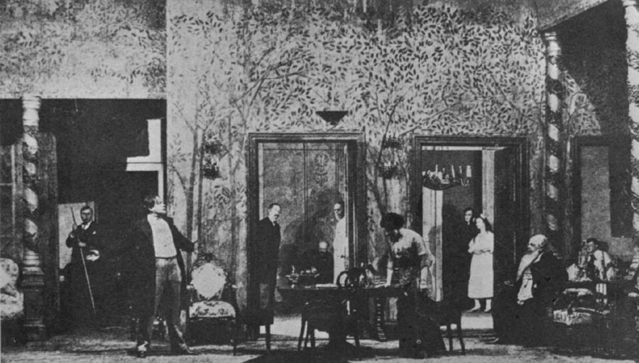
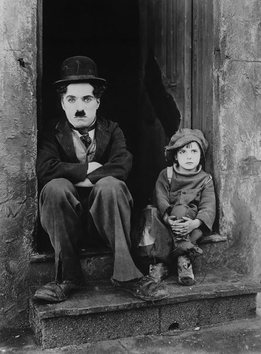
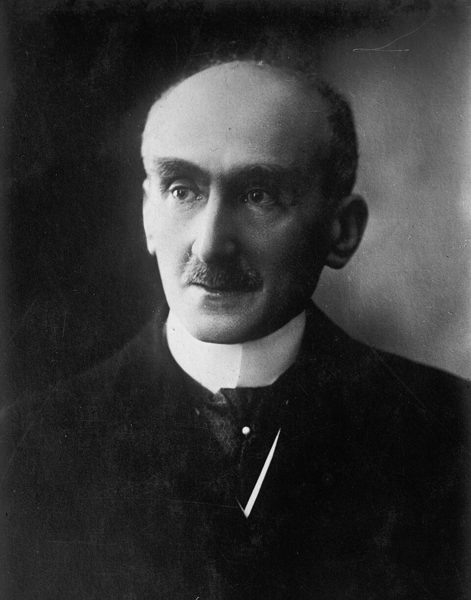

the weakest possible motives
… what were the weakest possible motives …
译本：「我第一次问自己，最弱的可能动机是什么」
人物做这件事最不起眼、最平常的理由
原文 weakest 是斜体，和前面斜体的 strongest 对着。斯坦尼斯拉夫斯基体系要演员替人物的行动找目的，作者看的那一版里人人挑了最强烈的；作者反过来问最弱的，整套地位练习就从这一问开始。
这是全书最有名的一篇的开头。作者在伦敦一家剧院的工作室里发现，演员怎么也演不像普通的闲聊，直到他要求每个人「比对方高一点或低一点」，场景一下子活了。这两节从这个发现出发，拿一段心理治疗小组的对话、他中学的三位老师、一本《战争与和平》和几则笑话，立起一个后面三页都要用的看人方法。读的时候抓两件事：作者说的 status 到底是什么，以及「跷跷板」。

上一篇是作者的自述，停在他怎样在皇家宫廷剧院的工作室里开始教即兴。这一篇正式讲他的第一套方法：地位。这一页的两节是总论，下一页（§3）讲他在课上怎么教，再往后是骂人游戏、空间、主仆和剧本。§2 他拿跷跷板去解释喜剧和悲剧，是全篇最像理论的一段。
作者说每一个语调、每一个动作都暗含着地位，口气很满。这是演员训练里极好用的一副眼镜，但心理学并不认为人和人之间只有地位较量。读的时候当放大镜用，本站的看法在页末。
两个人随便聊几句天的时候，他们到底在交换什么？
读的时候带着这几个问题。不用先找答案，读完回来对照「检查一下理解」。
这两节像一堂课的录音。从一个困惑出发（演员演不像闲聊），一次看戏得到灵感，一句课堂指令改变了一切。接着他不先下定义，而是摆出两组例子：拜昂书里的一段小组对话（他逐句批注）、他中学的三位老师，然后才说 status 该怎么理解，并拿流浪汉和公爵夫人示范。后半是他和学生的一连串发现，一条接一条，最后落到跷跷板，再用莫里哀的一段戏、谐星的段子和两则笑话示范。§2 节奏突然变快，从哲学跳到人类学：先反驳柏格森，再讲悲剧和献祭，证据也比前面薄。
作者落在哪：地位不是你的身份，而是两个人在互动中随时「做」出来的相对高低；它像跷跷板一样此起彼伏，闲聊、（他说）大多数喜剧和悲剧都靠它推着走。
这一页是原书和译本「姿态」一篇的前两节。粗体是本站给的节名，下面是译本的节号和小标题、这一节在译本电子书中开头的几个字（搜它就能跳过去），再下面是英文原文的开头。每节标了档：「先读」是这本书最精彩、不读就错过的，「有空」好看但跳过不丢线。读完打个勾。
先把这一页用到、作者默认你懂的几个概念讲一遍。讲的是概念本身，作者拿它推出什么，读原书时自己看。
日常说「地位」，指一个人的身份：职位、财富、名气。作者用 status 指另一样东西：两个人相处的这一刻，一个人把自己摆得比对方高还是低。它是做出来的，一句话、一个眼神就能变。社会地位低的人可以演得很高（乞丐冲着贵妇吆喝），社会地位高的人也可以演得很低（总经理对门卫点头哈腰）。
程序员熟悉的例子：代码评审里，同样职级的两个人，一个写「这种写法我三年前就不用了」，一个写「我可能没看懂，这里为什么这样写？」，职级没变，在对方面前的高低完全不同。心理学里相近的说法是支配和顺从，作者也承认那才是准确的叫法，只是怕学生抵触，才用了 status。这个词译本：「姿态」，取的是「摆出来的样子」；本站统一叫「地位」，读到「高姿态」「低姿态」，就是演高、演低。
在这一页：§1 先摆例子再给定义，强调「你是什么地位」和「你演什么地位」是两回事；后面三页都建在这个区分上。
作者认为多数人有一种习惯的玩法：有人总把自己往上抬，有人总往下缩。演高不等于傲慢，演低也不等于谦虚，它们是一整套信号，后面一页他会拆成眼神、头、手和说话前的那一声「呃」。第三种人：能看场合随时抬高或放低自己，作者叫他 status expert（地位专家）。
注意和下一页的 status specialist 分开：那是只会演一头的人（只会高或只会低），和地位专家正好相反。译本把两个都译成「姿态专家」，读到时看上下文。
在这一页：§1 的三位老师就是这三种人；同一节后半作者还发现，人常常演着和自己以为相反的那一头。
地位是相对的：两个人坐在跷跷板两头，一头上去，另一头就下来。所以「抬高自己」和「压低对方」效果差不多，「放低自己」和「抬高对方」也差不多。日常的例子：同事说「我的方案被老板夸了」，大家恭喜，心里却往下沉了一点；他要是说「我的方案被毙了」，大家安慰，心情反倒好了些。例外是你和那个人坐在同一头：自家孩子考了第一，你不会觉得被压低。
博弈论里管这种「一方所得就是另一方所失」叫零和。作者没有用这个词，地位也不全是零和，这一点页末「本站怎么看」再说。
在这一页：§1 后半作者正式提出它，并据此教演员在「抬自己」和「压对方」之间交替；§2 他拿它解释喜剧和悲剧。
先猜：一个人说「昨晚的故障是我两点爬起来修好的」，和说「听说昨晚的故障是你的代码引起的」，在跷跷板上的效果一样吗？再点下面「茶水间」里的两种说法验证。
上面四个按钮换场景。每一步从下面几句台词里选一句，跷跷板跟着动：板往谁那头翘起，谁此刻就高。台词和场景都是本站编的，每句后面灰字是它做的动作（抬自己、压对方……）。先从「茶水间」开始。
需要浏览器打开脚本才能运行。
图例：板上左边是 A，右边是 B；「后台报喜」里还有一个旁观的 C。板一般每句动一格，最多倾斜四格；在下面的一方抬自己或压对方，会一下子翻到上面（书里 Y 太太「立刻盖过」X 太太就是这样）。下面三个数依次是：此刻谁高、高出几格；到目前为止高低换了几次位（「翻转」）；这一场里最大的差距是几格。
这个模拟器只演一件事：话里的地位往哪个方向挪。声音、姿势、眼神（下一页的内容）它不管；书里的喜剧要「丢了地位又不招人同情」，同不同情它也算不出来。
作者在课上用过、照着就能玩的；个别几张是本站照书里的段落改的，卡里写明了来历。几个人、怎么玩、看什么写在卡片上；「先猜」那一栏是书里的课堂上发生了什么，先自己猜，或者先玩一次，再点开。全书的游戏卡汇总在游戏汇总。
作者说演员好像一下就懂了，场景变得「真实」，大家显得出奇地敏锐。又好笑又让人不安：所有暗中的小心机都暴露了，谁说一句「无害」的话，大家立刻看穿他背后的用意。
作者说，想放低自己这一头却卡壳的时候，可以改去抬高对方那一头；同理，说「我闻起来香」和说「你真臭」效果相近。交替着来，台词就有变化。他说好剧作家也这样写，还把莫里哀《屈打成医》的开场逐句标了一遍：谁在抬自己，谁在压谁，连亚里士多德和证婚人都被压了。
作者只说大多数连环漫画都建立在很简单的地位互动上，笑话也可以这样分析，这两则他没有逐句解释。本站的读法：顾客以客人的身份来抱怨，女招待却把蟑螂当成一位正在用厕所的客人，让顾客等着，抱怨的人一下子排到了蟑螂后面。
按在书里出现的顺序排，标题前是节号。只讲到读懂这一页需要的程度。
作者看的是这个剧院几十年后的《樱桃园》，他觉得每个演员都挑了最强烈的动机，像是被「完善」过了头。他反过来问：人物最弱、最平常的动机是什么？这一问后来引出了整套地位练习。下一篇和面具一篇他还会回到斯坦尼斯拉夫斯基。
作者从这本书里借来一段小组谈话：几位太太和先生轮流说自己身体不适，每一句都在悄悄盖过别人。拜昂原本是拿它说明「这个小组表面和气，其实毫无合作的希望」，方括号里逐句的地位批注是作者加的。

作者说观众喜欢看演出来的地位和社会地位的反差，比如流浪汉被错当成老板。果戈理的喜剧《钦差大臣》（1836）就是这样：一个小官吏路过外省小城，被当地官员误当成微服私访的钦差，一路被捧上天。卓别林的流浪汉是另一种：社会的最底层，却常常把周围的体面人一个个拉下来。
《屈打成医》（Le Médecin malgré lui，1666）是莫里哀的闹剧：樵夫斯加纳列尔和妻子吵架，妻子为了报复，骗别人说他是个怪脾气的名医，非得挨顿打才肯承认，于是他被打着当上了医生。作者引的是开场夫妻对骂那一段。Ken Dodd（1927–2018）是利物浦出身的英国谐星，以龅牙、乱发、一根彩色的「挠痒棒」和连珠炮似的段子出名，作者记下的那段「站在水槽里洗澡」就是他的自嘲。

作者在 §2 开头引的就是这本书：一个人踩到香蕉皮滑倒，柏格森说好笑在于他的肌肉还在照老样子动，像个自动机。作者不同意，他的理由见「读完」和「本站怎么看」。
Walter Raleigh（约 1552–1618）是伊丽莎白一世时代的英国廷臣、航海家，1618 年在伦敦被斩首。流传下来的故事说，行刑前有人问他头要不要朝东放，他答：只要心正，头朝哪边有什么要紧。作者拿这件事说明，连临刑的人也被期望「死得体面」，也就是到最后都保持高姿态。
读译本时值得翻一下原文的地方：双关、行话、口语，和译本传不出的语气。灰色斜体是原文里的一小段，在英文电子书里搜它就能找到；方框里是译本这一句的译法。译错的放在下一节「译本勘误」。
对着译本读这两节时，下面这些地方会把人读歪。方框里是译本的原句，在译本电子书里搜它就能找到；灰色斜体是英文原文那一处。只收意思错了、反了、漏了的，措辞上的出入不收。全书的勘误汇总在译本勘误。
… we didn’t bother to answer it …
译本：「如果有人问了一个我们不好回答的问题」
原文是说：练过地位以后，有人提个问题，大家根本不去答问题本身，只琢磨他为什么要这么问。译本像是在说碰到了难题。
… without everyone instantly grasping what lay …
译本：「如果没有立即掌握其背后的原理」
原文：谁说一句「无害」的话，大家立刻看穿他背后的用意。译本写成「不掌握原理就说不出无害的话」，意思不对。
… to see status transactions except when …
译本：「通常情况下我们对这种姿态互动是没有意识的」
原文说平时我们是被「禁止」看见地位往来的（作者给「禁止」加了引号），只有起了冲突才允许看见，像一条不成文的规矩。译本只说「没有意识」，这层意思丢了。
… when I felt ever so queer …
译本：「然后闻到了奇怪的味道」
queer 在这里是老派英式口语「不舒服、发晕」，ever so 是「特别」。她是排队时突然觉得特别难受、差点晕倒，没有什么气味；后面 A 先生劝她弯腰让血回到头上，才接得上。
… only I should have had to …
译本：「要是我就不排队了」
原文是「我也是这种感觉，只不过换了我，早就得离队了」：她站在 X 太太一边，同时说自己病得更重。作者紧接着的批注夸她「很有天分」，靠的就是这层意思。
… given an excellent reference just to …
译本：「我们的行为反而成了他被辞退的依据」
原文：学校为了打发他走，给他写了一封极好的推荐信，他反倒在郡的另一头当上了校长。译本写成学生的行为成了辞退的依据、他另找了一所学校，故事结尾的讽刺没了。
… The third was a status expert …
译本：「第三位老师则是姿态专家」
这里的 status expert 是能随时抬高、放低自己的人。下一页的 status specialist 是只会演一头的人，译本也译作「姿态专家」。两个词意思相反，读到时看上下文分开。
… Status is a confusing term unless …
译本：「姿态是一个令人困惑的术语」
译本全书把 status 译作「姿态」，这个译法本身不算错，但中文「高姿态」多指摆架子、有风度，作者说的高低却时时在变、谁都在演。读到「姿态」就想成「此刻把自己摆多高」；本站统一叫「地位」，这一条只报这一次。
… but I’d create a resistance …
译本：「但我遇到了些障碍」
原文：其实该叫支配和服从，可这么叫会引起学生抵触：肯「抬高、降低地位」的学生，你让他去「支配」「服从」，他可能不干。译本「我应该谈谈……了，但我遇到了些障碍」读来像他要转入新话题却卡住了；其实这是他不用「支配」而用 status 的理由。
… with arms folded or close to …
译本：「他们摆出的姿势要么抱臂要么叉腰」
原文是抱着胳膊，或者两臂紧贴身体两侧，意思是「我没多占地方」。叉腰正好是撑开胳膊、多占空间，和作者的意思相反。同一段的「装傻」原文是故意面无表情。
… take an acquaintance an early morning cup …
译本：「如果我请一位熟人喝早茶」
英国有一早把茶端到床边、叫醒家人或留宿客人的习惯。作者说的是这个场景，所以下文朋友之间才会说「起来，你这头老母牛」。中文「喝早茶」容易让人想到茶楼。
… to be told things to our discredit …
译本：「令自己感到丢脸的事情」
原文：别人其实想听说话人自己的丢脸事，而且最好讲得让他们用不着同情。译本把丢脸的人换成了听的人。下一句「演低的人攒着自己的糗事来逗别人」就是接着这层说的。
… slaves are always supposed to sing …
译本：「所以奴隶们总是边工作边唱歌」
supposed to 是「人们指望他们这样」：我们希望地位低的人显得快活，好不必同情他们。作者在挖苦这种指望，不是在说奴隶真的爱唱歌。
… The effect wouldn’t be tragic, but pathetic …
译本：「结局就不是悲惨的，而是可怜的」
tragic 指悲剧这种效果（让观众得到净化），pathetic 指只叫人觉得可怜。作者的意思：主角一旦摆出低姿态，观众就得不到悲剧该有的宣泄，戏就从悲剧掉成了惨剧。译本「悲惨」「可怜」意思太近，区分没了。
… criminals about to be executed were supposed …
译本：「即使是将被处死的犯人也期待有个“好结局”」
make a good end 是英语里「从容赴死」的老说法：临刑的人被期望死得体面，也就是到最后都保持高姿态。译本像是犯人自己盼着结局圆满。
… the feeling of moving up a step …
译本：「体验到了前进的感觉」
原文是看着高位的人被打倒，每个人都觉得自己在等级里往上挪了一格，正是跷跷板的意思。译本「前进」把等级的意思丢了。
Status is a confusing term unless it’s understood as something one does. You may be low in social status, but play high, and vice versa.— §1。本站译：「地位」这个词容易让人糊涂，除非把它理解成一个人「做」的事。你的社会地位可以很低，却演得很高，反过来也一样。
这是全篇的定义，口气平静，像在纠正一个常见的误会。关键是 does（原文斜体）和 play：地位是动词，不是名词。读完这一页再回来看，前面的三位老师、拜昂的小组，都是在「做」地位。
A comedian is someone paid to lower his own or other people’s status.— §1。本站译：喜剧演员，就是被雇来降低自己或别人地位的人。
一句俏皮的定义，带着作者常有的那种把话说满的劲头。前面一句其实有限定：大多数（most）喜剧靠跷跷板。别把这句当成喜剧的完整理论，它更像一个好用的经验法则，§2 他会拿它去和柏格森争。
读完这一页的两节再看。下面是作者在这两节里的主张，由本站按主张重新组织，不按原书的顺序；每条后面是节号，拿不准就回书里那一节再读一遍。
作者区分「你是什么地位」和「你演什么地位」：社会地位低的人可以演高，反之亦然，观众爱看两者的反差。他承认准确的说法是支配和服从，选 status 这个词是为了不让学生抵触。
§1他在工作室里发现，每个语调、每个动作都暗含地位；同一句「早上好」，经理听来可能是被放低，银行职员听来可能是被抬高，信息由接收的人改写。照集体照时人们想摆出中立，恰恰说明中立摆不出来。朋友之间也玩，只是约好了当游戏玩。
§1作者说，一练地位他们就发现，人会演着一种地位，却深信自己演的是相反的那种。他自己就是：以为在表示友好、谦虚，其实是在压低对方；学生被要求放低自己，一开口却在炫耀读过大部头。这种错位会让一群人合不来，拜昂那组人表面和气，其实人人在压别人。
§1一方上去，另一方就下来；例外是你和被抬高的人坐在同一头。所以抬自己和压别人效果相近，演员卡壳时可以换个方向使劲，交替着来，台词更有变化。
§1他认为大多数喜剧靠降低地位，前提是观众不必同情；好笑不在于像柏格森说的那样像机器，而在于丢了地位；悲剧则是把高地位的人逐出群体，主角到最后都得保持高姿态，否则只剩可怜。这一节是他的推想，没有举研究。
§2合起来：作者交给演员一把尺子：别先问人物「想要什么」，先问他「此刻把自己摆多高」。这把尺子在后面三页会被拆成具体的身体信号、空间和主仆关系。
这本书 1979 年出版。下面挑出这一页里能被后来的研究检验的说法，分「书里 / 当时 / 今天」三栏，并给一个结论。结论判的是标题里「书里的说法：」后面那一句。全书的这一节汇总在今天怎么看。
读完作者的主张，再看它站不站得住。每一块摆出三样：主流怎么看，作者怎么看，本站的评论。最后一句是本站对这一页的总体判断。
主流看法：社会心理学大体同意，人对地位极其敏感，2015 年一篇综述认为追求地位是人的基本动机之一；地位和姿势、眼神、说话方式这些非语言信号的关系，也有大量研究。但研究也把靠威慑的支配和靠敬重的声望分开，人与人之间还有大量合作、照顾和单纯的信息交换。
作者的看法：每个语调和动作都暗含地位，没有中立，连朋友之间也在玩，只是约好了当游戏。§1
本站的评论：作为看人的镜头，它好用得惊人：读完这一节，开会、聚餐时你会忍不住数谁在抬谁。但「每一个」是演员训练的口气，目的是让学生不放过任何细节。把一切都看成地位较量，会漏掉别的东西，也容易让人变得多疑。把它当放大镜，不当世界观。
主流看法：笑的理论至今没有定论。优越论最古老，能解释嘲笑、滑稽戏和互损，解释不了文字游戏和荒诞；后来的理论多半把「冒犯」和「安全」两个条件放在一起讲。
作者的看法：踩香蕉皮的人只有在丢了地位、我们又不必同情他的时候才好笑；柏格森的「机械」解释说不通。§2
本站的评论：作者的反例有一半打偏了：柏格森在《笑》的开头自己就说，笑要求暂时收起怜悯，情感是笑最大的敌人，所以老爷爷摔倒不好笑，他也解释得了。「同不同情」这个开关两人都认，后来的理论也保留了；真正的分歧是好笑的那一下是什么，柏格森说「像机器」，作者说「掉了地位」。另外他原话说的是「大多数」喜剧靠跷跷板，这个限定要留住；冷笑话、谐音梗里很难找到谁掉了下去。
主流看法：讲悲剧，最常被引的是亚里士多德：悲剧借怜悯和恐惧让观众得到净化。法国学者吉拉尔在《暴力与神圣》（1972）里提出，献祭是把群体的暴力集中到一个替罪羊身上，这个理论影响很大，争议也很大。
作者的看法：悲剧的主题是把高地位的动物逐出群体，主角必须保持高姿态；献祭前，牺牲者要先被抬高。§2
本站的评论：这是一段漂亮的联想，不是论证：他说读过献祭的报告，却没说是哪些，没法核对。拿来指导演员很有用（悲剧主角别在地上打滚），当作人类学结论就要打折扣。
本站的总体看法：这一页值得带走两样工具：地位是做出来的，和跷跷板。拿它们去看身边的对话，会有很多「原来如此」。作者把话说得很满，那是教演员的口气；喜剧、悲剧那几段是他的推想，好玩，别当定论。
先在心里答，再点开。答错的那题，回书里把对应那一节再读一遍。
他想让演员重现生活里普通的闲聊：看《樱桃园》时他想到，人物真正的动机往往是最弱、最平常的。差距定得很小，场景一下子像真的了（为什么要小，书里没细说）；差得大了是另一种戏，后面「最大地位差」一节会讲。
管不住纪律的那位习惯演低：动作多，爱脸红，在教室里像个闯入者。让学生害怕的那位是停不下来地演高。受爱戴的那位是地位专家，能随时抬高或放低自己。
否定自己的作品，等于说夸奖的人眼光不行。表面上放低了自己，实际上把对方的品味也拉了下去。
这句话暗示他读过好几遍这部大书，是在炫耀文化上的优势。改成「我一直想读」，或者接着自嘲一句「我只看里面的插图」，地位就下来了。
他上去了，别人就相对下来了。如果你和他坐在同一头，比如他是你的孩子，或者你一向以认识他为荣，他升，你也跟着升。
如果好笑只因为人像机器那样僵，我们就会笑溺水的人、笑阅兵。实际上老爷爷摔倒我们不笑，因为同情他；只有摔倒的人丢了地位、我们又不必同情时，才好笑。
用一句话说这一页：
想一想：回想你最近一次开会或家庭聚餐，谁一直在抬高自己，谁在悄悄放低自己？你自己那天习惯演高还是演低？有没有哪一句话，你当时以为是谦虚，现在看是在压别人？
读过又忘了，从这里想起来。挑的是这一页最值得记住的故事、游戏和说法，不按原书顺序；每条后面是节号，想细看就回书里那一节。全书各页的这一节都收在全书回顾。
一句话：地位不是你是谁，而是你此刻把自己摆多高；两个人坐在一块跷跷板上，你上去，我就下来。
管不住课堂的，让人害怕的，受爱戴的。作者多年后才明白：三人分别是习惯演低的、停不下来演高的，和能随时换挡的地位专家。
§1「喂！上哪儿去？」「对不起，我没听清……」社会地位和演出来的地位可以完全相反，观众爱看这种反差。
§1学生要放低自己，却说「那是我最喜欢的书」，全班大笑：他在炫耀读过大部头。加一句「我只看插图」，就降下来了。
§1说「我拿到角色了」，人人道贺，心里却往下沉；说「他们嫌我太老」，大家安慰，却明显高兴起来。这就是跷跷板。
§1作者反驳柏格森：老爷爷摔倒我们会冲过去扶，只有丢了地位、又不招人同情的摔倒才好笑。
§2